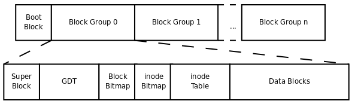

Linux文件系统
Posted on 2017-03-12(Sunday) 22:30 in Linux
Linux 文件系统EXT2
本篇文章旨在介绍Linux的EXT文件系统，有错误处也请指点，共同学习。
linux文件系统数据存放
super block：记录整个文件系统的整体信息，包括inode与block总量，使用量，剩余量以及文件系统的格式与相关信息。
inode：记录文件的属性，一个文件一个inode，这些属性包括文件权限和文件属性，还要记录此文件的数据所在的block号码。
block：记录文件实际的内容，文件过大会占用多个block。
在读取我们需要的数据的时候，在读到inode节点中文件数据存放位置后就可以一次性读取所有的内容（索引式文件系统）。
EXT2文件系统
linux文件系统已经发展到EXT4，本篇文章还是拿EXT2来讲解。EXT2文件存储有时容量会很大，之前所说的inode与block大小又是在文件系统默认格式化时就已固定，这时候每个文件的inode与block在一起会很麻烦，EXT2所以在格式化的时候会区分多个块组（block group），每个块组一个独立的inode与block系统。如下所示

Data block：用来放置文件内容，默认大小有1kb，2kb，4kb。
注意：格式化完后的block大小不能再次改变。 一个block当中存放一个文件，如果文件过小同样也是只能存放一个文件。 文件过大可以存放在多个block当中。
inodetable：每个文件的inode
inode固定大小128bytes，每个文件占用一个inode
在读取文件之前，系统先要读取每个文件inode中的内容，包括权限.
如果文件过大，文件占用block过多，inode大小固定，怎么办？
每个inode当中记录文件block号码需要4bytes，如果文件过大，文件占用block过多，EXT当中的inode当然有解决这种问题的出现，inode结构当中记录block号码有12个直接，1个间接，1个双间接和一个三间接。附上inode结构图：
12个直接可以直接获取到block号码，1个间接就是再拿一个block来当做记录block号码的记录区，同样双间接就是用两个block当做记录区，第一个block记录下一个记录区block号码，第二个充当实际记录。依次类推三间接。这样一来，出现较大文件也可以使用inode来记录block位置。
目录树
linux系统一切皆文件，包括目录，linux同样也会为目录分配inode与block，inode用来存放目录权限，block用来存放目录当中的文件名还有该文件名占用的inode号码数据。 目录树读取
在linux系统中寻找一个文件的时候可能需要经过几层目录来获取到我们所需要的文件，linux是如何做到读取目录的，首先linux文件系统顶层是属于根目录（inode号码为2），接下来系统通过挂载的信息找到挂载点的inode号码（比如从根目录开始），此时得到的就是根目录的inode内容，并依据该inode读取根目录block内的文件名数据，然后一层一层去找到所需要的文件；通俗讲就是，如果是目录就是先找inode，找到inode，再找它其中的block号码，再在这些block中找下一级inode号码并且查看下一级权限，依次下去；如果是文件也是先找inode，找到inode，再找它其中的block号码并且查看权限，读取block内容
挂载点
在上面提到了挂载点与挂载的概念，以下介绍关于linux中挂载的内容。
在使用文件系统前需要能够链接到目录树才能被使用，挂载就是将文件系统和目录树结合的操作，注意，挂载点一定是目录，该目录是进入该文件系统的入口。所以，使用一个文件系统首先要做到挂载；比如，根目录，它就是一个挂载点，在它挂载到文件系统后，我们才能进入根目录进行相关操作。（通常文件系统最顶层的目录的inode一般为2号），如下图，在我这个系统中挂载点就只有根目录一个。
硬链接与软链接
硬链接与软链接透过本质理解为文件共享。以下面的示例来介绍这两个概念
现有A与B两个目录，A目录下有C文件，现在C文件也出现在了B目录下，这种情况就是链接（Link）。 硬链接：A目录下的C文件属于源文件，C文件有一个单独的小型数据结构，这个就是上面所述的inode，而硬链接的做法很简单，就是将B目录指向这个inode，inode中有一个计数标志，用来计数链接（count）在C文件上的链接数（也可以说是目录数），每加一次连接，count计数加1。这时候就完成了B目录到C文件的硬链接操作。
软链接：软链接也可叫做符号链接；同样A目录下的C文件属于源文件，通过系统在B目录下创建关于C文件的Link文件，这样B与C就存在了一个连接，这个LInk文件中只包括它所连接的文件的路径名，当B要读取Link文件时，实际就会找到源文件（C文件），然后读C文件；这便是软链接。